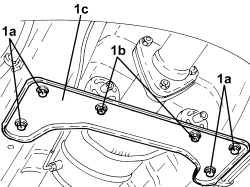
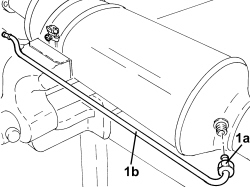
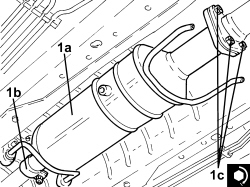

1080B81 PARTICULATE FILTER (D.P.F.) - R.R.
- Path
- Procedures > 10 ENGINE > 1080 EMISSION CONTROL SYSTEM > 1080B EXHAUST EMISSION CONTROL SYSTEM > 1080B81 PARTICULATE FILTER (D.P.F.) - R.R.
- Kind
- repair procedure (removal / refitting; the operation number is the code)
- Applies to
- engines: 2.4 JTD 20v; all production periods
- Interactive page
- https://sloeber94.github.io/elrnDB-aBrrSpdr/en/#/946003020
Applies to: engines: 2.4 JTD 20v; all production periods
 Removing
Removing
 Refitting
Refitting- Position the vehicle on a lift.
1. Undo the bolts (1a), (1b) and remove the particulate filter mounting bracket (1c).

Applies to: engines: 2.4 JTD 20v; all production periods
1. Loosen the bands and disconnect the flexible pipes from the rigid pipes for the particulate filter differential pressure sensor.

Applies to: engines: 2.4 JTD 20v; all production periods
1. Undo the exhaust gas temperature sensor on the particulate filter and remove it.

Applies to: engines: 2.4 JTD 20v; all production periods
1. loosen the collar (1a), undo the bolts (1b) and remove the particulate filter (1c) complete with its seal.

Applies to: engines: 2.4 JTD 20v; all production periods
1. At the bench, undo the connector (1a) and remove the inlet pressure pipe downstream of the particulate filter (1b).

Applies to: engines: 2.4 JTD 20v; all production periods
Refitting
Removing1. Place the inlet pressure pipe downstream of the particulate filter (1a) in its housing and tighten the connector (1b) to the recomended torque.
Component | Fastening | dia | Value (daNm) | Validity |
|---|---|---|---|---|
Pressure intake pipe downstream of particle filter | Connector | M8 | 1.2 ÷ 1.6 | 2.4 JTD 20v |

Applies to: engines: 2.4 JTD 20v; all production periods
1. Place the particulate filter in its housing (1a) complete with its seal, tighten the collar (1b), and the bolts (1c) to the recomended torque.
Component | Fastening | dia | Value (daNm) | Validity |
|---|---|---|---|---|
Intermediate exhaust pipe with flexible section - particulate filter side | Nut | M8 | 2.2 ÷ 2.6 | 2.4 JTD 20V |

Applies to: engines: 2.4 JTD 20v; all production periods
1. Place the exhaust gas temperature sensor in its housing on the particulate filter and tighten it to the recommended torque.
Component | Fastening | dia | Value (daNm) | Validity |
|---|---|---|---|---|
Exhaust gas temperature sensor on particle filter | - | M14 | 4.5 | 2.4 JTD 20v |

Applies to: engines: 2.4 JTD 20v; all production periods
- Connect the flexible pipes to the rigid pipes for the particulate filter differential pressure sensor and tighten the bands.
- Place the particulate filter mounting bracket in its housing and secure it using the nuts and bolts.
- Remove the vehicle from the lift.